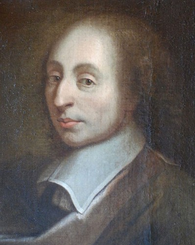

帕斯卡尔<人是会思考的芦苇>(1) 江铭辉 五梦网

图1：帕斯卡尔(摘自维基百科，作者anonyme)
一、 前言
帕斯卡尔生于法国中部，从小就热中于研究数学、植物学，十九岁时发明计算器，二十五岁时发现「帕斯卡尔原理。此外，帕斯卡尔以基督教徒的立场写下的备忘录，在其死后也被人们收录下来，而成为有名的「沈思录」，这本书对后世的哲学有很大的影响。
二、 帕斯卡尔的出身
公元1623年6月19日，帕斯卡尔(Pascal Blaise)生于法国中部克莱蒙特‧费郎(Clemont Ferrand)卒于巴黎，父亲叫艾特内‧帕斯卡尔(Étienne Pascal)学法律在税务局工作也是贵族，他热衷科学和数学，母亲安东尼内特‧卑尔根(Antoinette Begon)在他3岁时就死了，家有3孩子，除了他外，另有一个姊姊吉贝特(Gilberte)及妹妹贾克琳(Jacqueline)。
三、 迁往巴黎，开始研究数学
1631年，他8岁时，全家迁往巴黎。父亲经常带他去参加每周一次的默森学院 (即法国科学院前身)的例会，并且在家亲自给帕斯卡尔授课。起初以拉丁文、希腊文为主。后来发现儿子有数理方面的天资和兴趣，但他唯恐帕斯卡尔过早研习有损身体的健康，故将数学书籍藏起来，不让帕斯卡尔读到。而年少的帕斯卡尔好学不倦，经常纠缠父亲，问几何学是什么，父亲总是搪塞。于是帕斯卡尔就独自钻研，12岁时他在地上画了很多三角形并坐着沉思，自行证明，得到了证明，如「三角形内角和等于两直角」等定理。父亲看他独自沉思，问他时，他指着地面回答说：「你看无论哪一种三角形，把三内角加起来都等于180°，此外父亲从他的笔记簿看到帕斯卡尔自创的数学名词和证明，惊喜的父亲再也不能阻拦他了，便将欧几里得的《几何原本》拿给他看。几周后，帕斯卡尔就贯通全书。从此，帕斯卡尔就开始从事数学研究。
父亲把他送到当时著名的〈莫尼克〉学会，在那里他碰到大数学家费尔马(Fermat)，他与费尔马借着通信讨论许多数学问题，二人并且于1654年首先提出概率理论。
四、 帕斯卡尔三角形
1636年，帕斯卡尔才13岁，有一天他又玩起了他的数学游戏，他在一张白纸上写上数字(图2)，先是往右横着写10个“1”，接着又在右边往下直写10个“1”，然后在第二行往右写下2、3、4、5、6、7、8、9。
接下来该写什么呢？帕斯卡尔不由得盯着他刚才随意写下的数字思考起来。
对了！2是上面的1和左边的1相加，3是上面的1和左边的2相加，已依此类推，4是上面的1和左边的3相加，因此第二列可写、2、3、4、5、6、7、8、9。第3列可写1、3、6、10、15、21、28、36。
这样一直写下去便成一数字三角阵。

图2：帕斯卡尔三角形(雏形)
帕斯卡尔望着这有趣的数字三角形，沉思。无意中将图2右转45°如图3，则顶端是1，第二数字是1、1，第三行是1、2、1，第四行是1、3、3、1，……每一行都是对称的。

图3：帕斯卡尔将图2右转45°
这些数字好熟悉啊！他终于想起来，它们不是二项式(a﹢b)n展开后的各项系数吗？帕斯卡尔发现这奇妙三角形后，以后人们将此三角形称帕斯卡尔三角形。